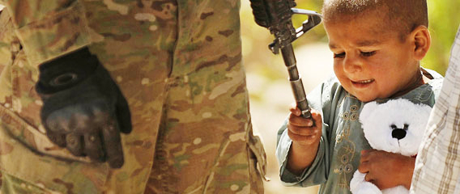
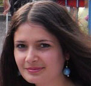

ВОЙНА - НАШЕ ВОЗМОЖНОЕ БУДУЩЕЕ

«А что, если остаться дома, дописать статью…», - размышляю, идти или не идти. Стрелки часов двигаются вперед, не проявляя признаков лени. Вчера узнала от Ани, что в течение двух дней в офисе Хельсинской гражданской ассамблеи покажут два грузинских фильма под названием «Прогулка в Карабах». Новость сама по себе не однозначная. Когда это грузин волновало благополучие армян, чтобы еще фильмы снимать про Карабах? - этот риторический вопрос первым приходит мне в голову. Честно говоря, хочу заснуть и проснуться тогда, когда карабахский вопрос уже окончательно решен. За 26 лет своей жизни я лично никаких подвижек не видела. Что же такое важное хотели сказать грузины на эту избитую тему? Пойду, посмотрю, тем более, что обещала.
Ожидала встретить в «Хельсинской» хотя бы нескольких знакомых журналистов, но к моему удивлению, никого не было. Потом узнала, что телеканалы и НПО, все как один, после предварительного подтверждения своего участия, отказались участвовать и освещать. Возможно, мои коллеги были очень заняты, или не захотели лишней головной боли, тем более, что за показом этих фильмов стоял Георгий Ванян, которого называют «предателем» за то, что он выражает свое мнение по Карабахскому вопросу, которое отличается от нашего общего мнения, мнения айастанцев.
О причинах не мне судить. Вот Георгий Ванян, председатель Кавказского Центра Миротворческих Инициатив, и одновременно директор «Стоп» фестиваля, в рамках которого и шел этот показ, объяснил: то, что мы привыкли в нашем обществе называть стереотипами, превратилось в железный занавес, который уже настолько замкнулся вокруг нас, что уже по любому вопросу не можешь иметь мнение отличное от общепринятого. То есть не имеешь права думать по-другому.
Как бы то ни было перейду к сути вопроса: Карабах где, грузины где. Пока смотрела фильм, все время думала, почему грузинские режиссеры спекулируют словом «Карабах», когда, по сути, фильмы про гражданскую войну в Грузии, про грузино-абхазский конфликт, а во втором фильме Карабаха вообще нет. Ближе к концу начала понимать - грузины сняли эти фильмы про себя, свои проблемы, Карабах не был самоцелью ни в названии, ни в сюжете, ни в содержании.
В первом фильме двое друзей, молодых грузин, Гиоргий-Гио, который хочет жениться на проститутке вопреки мнению своей семьи, и Гоглик, наркоман, волей случая оказываются в двух различных мирах, расположенных на одной и той же земле – в лагере армян и в лагере азербайджанцев. И русская журналистка со своей командой дополняет эту идеальную картину региона.
Постепенно знакомимся с нравами и внутренней кухней противоположных лагерей. Находясь то там, то тут, в лагерях, где каждая из сторон одинаково обвиняет врага, грузин проявляет свое реальное отношение к азербайджанцу и армянину – без приукрашивания, показывает то впечатление, которое есть у него сегодня, которое было вчера и будет завтра.
Во время обсуждения на тему «После «Мимино»: Южнокавказская трансформация» прозвучали интересные мнения. Было мнение, что это первая, после «Мимино», возможность для нас, армян, посмотреть на себя глазами соседа и узнать, увидеть нашу проблему в другом измерении - глазами грузин. Разговор шел вокруг того, что изменилось в нашем обществе со времен «Мимино». Для себя я сделала интересное открытие: ничего не изменилось, а если и изменилось – то только к худшему. А пара Мимино - Фрунзик Мкртчян была искусственной, поскольку в те годы общения грузин и армян на таком уровне не было. Но обиднее всего для меня было преобладание мнения о том, что грузинам не о чем говорить с нами, с армянами, и если они вынуждены замечать наше существование, то делают это, в лучшем случае, говоря тосты и кушая с нами шашлык. А вот отношения грузин и азербайджанцев – взаимовыгодные и добрососедские, то есть они легче находят общий язык друг с другом. В итоге страдаем мы, как выразился один из молодых людей – наивные армяне, которые вместо того, чтобы шевелить мозгами – ведем петушиные бои.
То есть выяснилось, что грузины нас армян не так уж любят, а почему, так и осталось под вопросом. Может, надо было и грузинских специалистов пригласить на обсуждение?
А в завершение, Артур Сакунц, поделился своим мнением, что военное положение приводит к тому, что человек отказывается от многих человеческих ценностей и, в конечном счете, приходит к самоуничтожению. С тяжелыми мыслями я пошла домой, ожидая, что следующий день фестиваля принесет зрителям хоть толику света.
«Война в искусстве: процесс самоочищения или воспроизводства?» такой была тема второго дня, и второй фильм вселил надежду, если грузины нашли в себе силы, то чем мы хуже?
Наркоман Гоглик, оставив позади привычную жизнь в Тбилиси, в конце второго фильма идет на фронт, и уговаривает Гио, вернуться домой, сообщает ему хорошую новость: Ты станешь отцом… Гоглик, встречая находящегося при смерти абхазского снайпера, который в фильме олицетворен в образе женщины, обещает, что он изменится, станет хорошим мужем, и первое в своей жизни признание в любви он делает женщине-врагу.
«Авторы фильма говорят: дайте нам жить своей жизнью, мы решаем, как нам жить. Я решаю подчиняться генералу с жирными пальцами или нет, жениться на проститутке или нет. Эти два фильма - ответ целого поколения на произвол человека с ружьем»,- такое мнение, высказанное Георгием Ваняном, привело к бурной реакции. Наша молодежь хочет быть самостоятельной и свободной в своих решениях - так следовало из обсуждения, но как отметил один из участников, в процессе воспитания, им навязывают образ мышления, которому они обязаны подчиняться всю оставшуюся жизнь. И как получилось, что разговор перешел к критике нашего великого романиста Раффи и его героя «Самвела» - осталось загадкой для меня. Восстали, забунтовали, выразили негодование против идеи отцеубийства во имя родины, и выяснили, что образ Самвела не так уж удачен и убедителен сам по себе, при любой его трактовке.
Кофе-брейк вернул всех в 21-й век, и обсуждение вернулось к недавно увиденному на экране. Теперь уже в центре внимания – Гоглик и последствия его трансформации. Ясно одно: грузины поставили задачу удалиться от образа врага, отказаться от этого образа. Гоглик посылает сигнал всем народам, которые сгрудившись на вершинах кавказского треугольника, создают свою историю: Хватит лаяться как собаки! Выстрел рождает выстрел, и после этого уже не важно, кто первый начал. Война самое ужасное, но последствия ее еще хуже. Во всяком случае, я лично думаю так.
Прозвучало мнение, что страна, которая снимает подобные фильмы, имеет возможность оставить войну в прошлом и двигаться вперед. Мы эти фильмы воспринимаем как наше возможное будущее, в то время как для грузина – это прошлое, на котором уже висит большой амбарный замок. И он, отказавшись от информационной войны – создает новую Грузию. «Все, что снимаю, получается про войну. Война для меня еще не закончилась. И рассказывая о ней, я могу от нее освободиться, наверно», - сказал продюсер фильма Леван Коринтели. Зная лично об ужасах войны и их последствиях, авторы фильма – солдаты, наверно сами перед собой поставили задачу самоочищения, и посредством фильма делятся этой идеей с другими.
Интересно, придет ли такое время, когда армянские и азербайджанские режиссеры, вместе или отдельно, снимут фильм, где война будет иметь лишь символическое значение, война станет лишь историческим эпизодом из жизни двух народов?
Фестиваль закончился, и, кажется, пора отдохнуть от фильмов. Вопросы остаются без ответов. Стрелки часов двигаются, не проявляя признаков лени.
Ануш Булгадарян
09-04-12
Ванадзор
Перевод с армянского: Л. Погосян
На фото вверху: Афганский ребенок
играет с оружием
военнослужащего США
на церемонии
открытия мечети
в селе Тарок Колаче,
отремонтированной
на пожертвования армии
США. Тарок Колаче был
разрушен американскими
войсками в октябре
2010 года, после того,
как талибы вывели
жителей и заминировали
деревню и ее окрестности.
Питер Паркс, AFP/Getty Images, www.latimes.com
Ожидала встретить в «Хельсинской» хотя бы нескольких знакомых журналистов, но к моему удивлению, никого не было. Потом узнала, что телеканалы и НПО, все как один, после предварительного подтверждения своего участия, отказались участвовать и освещать. Возможно, мои коллеги были очень заняты, или не захотели лишней головной боли, тем более, что за показом этих фильмов стоял Георгий Ванян, которого называют «предателем» за то, что он выражает свое мнение по Карабахскому вопросу, которое отличается от нашего общего мнения, мнения айастанцев.
О причинах не мне судить. Вот Георгий Ванян, председатель Кавказского Центра Миротворческих Инициатив, и одновременно директор «Стоп» фестиваля, в рамках которого и шел этот показ, объяснил: то, что мы привыкли в нашем обществе называть стереотипами, превратилось в железный занавес, который уже настолько замкнулся вокруг нас, что уже по любому вопросу не можешь иметь мнение отличное от общепринятого. То есть не имеешь права думать по-другому.
Как бы то ни было перейду к сути вопроса: Карабах где, грузины где. Пока смотрела фильм, все время думала, почему грузинские режиссеры спекулируют словом «Карабах», когда, по сути, фильмы про гражданскую войну в Грузии, про грузино-абхазский конфликт, а во втором фильме Карабаха вообще нет. Ближе к концу начала понимать - грузины сняли эти фильмы про себя, свои проблемы, Карабах не был самоцелью ни в названии, ни в сюжете, ни в содержании.
В первом фильме двое друзей, молодых грузин, Гиоргий-Гио, который хочет жениться на проститутке вопреки мнению своей семьи, и Гоглик, наркоман, волей случая оказываются в двух различных мирах, расположенных на одной и той же земле – в лагере армян и в лагере азербайджанцев. И русская журналистка со своей командой дополняет эту идеальную картину региона.
Постепенно знакомимся с нравами и внутренней кухней противоположных лагерей. Находясь то там, то тут, в лагерях, где каждая из сторон одинаково обвиняет врага, грузин проявляет свое реальное отношение к азербайджанцу и армянину – без приукрашивания, показывает то впечатление, которое есть у него сегодня, которое было вчера и будет завтра.
Во время обсуждения на тему «После «Мимино»: Южнокавказская трансформация» прозвучали интересные мнения. Было мнение, что это первая, после «Мимино», возможность для нас, армян, посмотреть на себя глазами соседа и узнать, увидеть нашу проблему в другом измерении - глазами грузин. Разговор шел вокруг того, что изменилось в нашем обществе со времен «Мимино». Для себя я сделала интересное открытие: ничего не изменилось, а если и изменилось – то только к худшему. А пара Мимино - Фрунзик Мкртчян была искусственной, поскольку в те годы общения грузин и армян на таком уровне не было. Но обиднее всего для меня было преобладание мнения о том, что грузинам не о чем говорить с нами, с армянами, и если они вынуждены замечать наше существование, то делают это, в лучшем случае, говоря тосты и кушая с нами шашлык. А вот отношения грузин и азербайджанцев – взаимовыгодные и добрососедские, то есть они легче находят общий язык друг с другом. В итоге страдаем мы, как выразился один из молодых людей – наивные армяне, которые вместо того, чтобы шевелить мозгами – ведем петушиные бои.
То есть выяснилось, что грузины нас армян не так уж любят, а почему, так и осталось под вопросом. Может, надо было и грузинских специалистов пригласить на обсуждение?
А в завершение, Артур Сакунц, поделился своим мнением, что военное положение приводит к тому, что человек отказывается от многих человеческих ценностей и, в конечном счете, приходит к самоуничтожению. С тяжелыми мыслями я пошла домой, ожидая, что следующий день фестиваля принесет зрителям хоть толику света.
«Война в искусстве: процесс самоочищения или воспроизводства?» такой была тема второго дня, и второй фильм вселил надежду, если грузины нашли в себе силы, то чем мы хуже?
Наркоман Гоглик, оставив позади привычную жизнь в Тбилиси, в конце второго фильма идет на фронт, и уговаривает Гио, вернуться домой, сообщает ему хорошую новость: Ты станешь отцом… Гоглик, встречая находящегося при смерти абхазского снайпера, который в фильме олицетворен в образе женщины, обещает, что он изменится, станет хорошим мужем, и первое в своей жизни признание в любви он делает женщине-врагу.
«Авторы фильма говорят: дайте нам жить своей жизнью, мы решаем, как нам жить. Я решаю подчиняться генералу с жирными пальцами или нет, жениться на проститутке или нет. Эти два фильма - ответ целого поколения на произвол человека с ружьем»,- такое мнение, высказанное Георгием Ваняном, привело к бурной реакции. Наша молодежь хочет быть самостоятельной и свободной в своих решениях - так следовало из обсуждения, но как отметил один из участников, в процессе воспитания, им навязывают образ мышления, которому они обязаны подчиняться всю оставшуюся жизнь. И как получилось, что разговор перешел к критике нашего великого романиста Раффи и его героя «Самвела» - осталось загадкой для меня. Восстали, забунтовали, выразили негодование против идеи отцеубийства во имя родины, и выяснили, что образ Самвела не так уж удачен и убедителен сам по себе, при любой его трактовке.
Кофе-брейк вернул всех в 21-й век, и обсуждение вернулось к недавно увиденному на экране. Теперь уже в центре внимания – Гоглик и последствия его трансформации. Ясно одно: грузины поставили задачу удалиться от образа врага, отказаться от этого образа. Гоглик посылает сигнал всем народам, которые сгрудившись на вершинах кавказского треугольника, создают свою историю: Хватит лаяться как собаки! Выстрел рождает выстрел, и после этого уже не важно, кто первый начал. Война самое ужасное, но последствия ее еще хуже. Во всяком случае, я лично думаю так.
Прозвучало мнение, что страна, которая снимает подобные фильмы, имеет возможность оставить войну в прошлом и двигаться вперед. Мы эти фильмы воспринимаем как наше возможное будущее, в то время как для грузина – это прошлое, на котором уже висит большой амбарный замок. И он, отказавшись от информационной войны – создает новую Грузию. «Все, что снимаю, получается про войну. Война для меня еще не закончилась. И рассказывая о ней, я могу от нее освободиться, наверно», - сказал продюсер фильма Леван Коринтели. Зная лично об ужасах войны и их последствиях, авторы фильма – солдаты, наверно сами перед собой поставили задачу самоочищения, и посредством фильма делятся этой идеей с другими.
Интересно, придет ли такое время, когда армянские и азербайджанские режиссеры, вместе или отдельно, снимут фильм, где война будет иметь лишь символическое значение, война станет лишь историческим эпизодом из жизни двух народов?
Фестиваль закончился, и, кажется, пора отдохнуть от фильмов. Вопросы остаются без ответов. Стрелки часов двигаются, не проявляя признаков лени.
Ануш Булгадарян
09-04-12
Ванадзор
Перевод с армянского: Л. Погосян
Питер Паркс, AFP/Getty Images, www.latimes.com
Кавказский Центр Миротворческих Инициатив

© Ассоциация Текали - info@southcaucasus.com